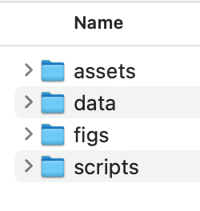
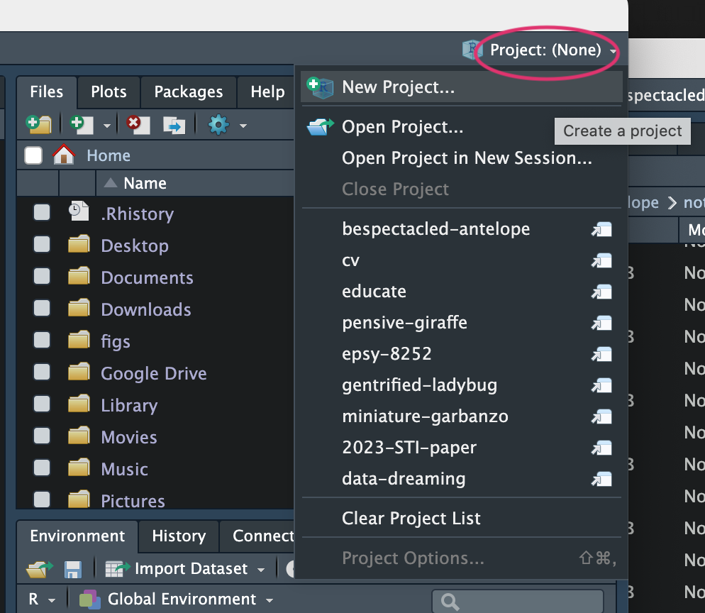

1 Project Organization
In this chapter, you will learn some basic tips and tricks for organizing directories and files for project management. At the end of it, you will have an organized project directory to begin work on Assignment 1.
1.1 Projects
In any project, whether it is work for an RA-ship, an assignment in EPsy 8252, a milestone for your degree (e.g., thesis) or a paper you are working on, it is important to have an organized set of files and good documentation. Both of these help foster rigor and reproducibility of research, and are even more important in collaborative work.
Electronically, a project consists of a set of directories (i.e., folders) and files. Organizationally, you will want to think about, among other things:
- What directories you will have;
- Which files will be located in which directories;
- The naming rules for files and directories;
While there are any of a number of alternative organizational structures that may work in different situations, here I will recommend a general strategy of creating projects for EPsy 8252. (This will also work for other types of projects.) For each project, we will have, at a minimum, the following directories:
assetsdatafigsscripts
The screenshot below shows a project with these directories.
It is typical to show directory and file organization via a “directory tree”. The directory tree for this project is shown below.
├── assets
├── data
├── figs
└── scriptsYour Turn
Set up a directory called assignment-01. Within this directory, create the four directories: assets, data, figs, and scripts. The directory tree will look like this:
assignment-01
├── assets
├── data
├── figs
└── scriptsHere the directory assignment-01 is the primary folder associated with our project. We refer to this as the root directory of our project.
1.1.1 Naming Conventions
The naming conventions for the directories and files in our project are as follows:
- File names should be short but descriptive (less than 25 characters)
- All lowercase letters
- Avoid special characters and spaces in a file name
- Use hyphens instead of spaces to separate words (e.g.,
assignment-01)
- Use hyphens instead of spaces to separate words (e.g.,
- Any names that include the date will use the ISO 8601 date format (YYYYMMDD)
- Any names that include a number will include at least two digits (e.g.,
assignment-01rather thanassignment-1)
Again, while there is no one best naming convention, it is important that you have one, and that you are consistent throughout the project. That being said, as you develop naming conventions for your projects, all the conventions should be documented! This documentation helps onboard collaborators to your project.
FYI
There are several guides available to help you establish naming conventions including here and here.
1.2 R Projects
Creating an R project is a way to inform RStudio about which folder is your project’s root directory. This also sets R’s working directory to your project’s root directory making it easier to access data and other files in your QMD documents. To create an R Project associated with the assignmnet-01 root directory,
- Click the project icon in RStudio (it might say
Project: (None)or something like that) and selectNew Project...(see screenshot below)

In the project wizard, select:
Existing Directory,- Click
Browseand select theassignment-01root directory you created earlier - Click
Open - Click
Create Project
The R Project will then be created and you should now see this project (called assignment-01.Rproj) in the assignment-01 directory.1 The project icon in RStudio should also have changed to assignment-01.
└── assignment-01
├── assets
├── assignment-01.Rproj
├── data
├── figs
└── scriptsOnce an R project has been created, it can be opened in RStudio by double-clicking on the .Rproj file.
Your Turn
If you haven’t already, create an R project associated with the assignment-01 root directory.
1.3 Working in Your Project
In RStudio, the Files pane of your assignmnet-01 R Project (see below) should show the contents of your root directory. You can use this pane to navigate to the different directories, or open files in the project.
We can add files and directories by creating them using an application on our computer or downloading them and saving them to the appropriate project directory.
Your Turn
Download the pew.csv file to your computer. Make sure that the file suffix is .csv. (Sometimes Safari users will find that the suffix .txt gets appended to the end of the filename—pew.csv.txt. If that is the case delete the .txt part that was appended.) Place pew.csv into the data directory of your project. The new tree is:
assignment-01
├── assets
├── assignment-01.Rproj
├── data
│ └── pew.csv
├── figs
└── scriptsIn RStudio, in the Files pane, if you click on the data directory, you should see pew.csv.
1.4 Creating a README File
We can also create files from inside RStudio . We are going to create a README file. A README is a plain text file that introduces and explains a project. It contains information that is commonly required to understand what the project is about. Every project should have a README file.
Your Turn
From the RStudio menu, select: File > New File... > Text File. This should open a blank text file in the RStudio editor. Copy the following text into your blank file:
# assignment-01
This directory contains all of the files necessary to complete Assignment 1.Click the Save icon (or select File > Save) and save this file as README; all uppercase. (README files are the one exception to our use of uppercase letters in our naming convention.) README files typically have no file extension—README is correct as opposed to README.txt.
Our directory tree now look like this:
assignment-01
├── README
├── assets
├── assignment-01.Rproj
├── data
│ └── pew.csv
├── figs
└── scriptsNotice that despite the README file starting with the letter “r”, it is placed first in the root directory prior to our other directories and files. This is by design. In Unix, any file in all uppercase letters is shown first in the directory tree. (It does not show first in the RStudio Files pane, nor in the file view when you open the root directory on your computer.)
Protip The {usethis} package includes functionality to create many useful files for projects, including README files.
1.4.1 Adding Content to README
Since README files are plain text files, they cannot include formatting like bold or italic. However, they do typically include Markdown syntax (which is itself plain text). The plain text nature of these files keeps them small in size and accessible to anyone with any type of computer.
FYI
There are several online guides for what to include in a README file, including here and here. There is also a pretty good template for a README for data science oriented projects here.
Since the README file is informational, you can include any type of information in this file that is useful to the project. For example, you could add your naming conventions to this file.
# assignment-01
This directory contains all of the files necessary to complete Assignment 1.
# Naming Conventions
- File names should be short but descriptive (less than 25 characters)
- All lowercase letters
- Avoid special characters and spaces in a file name
+ Use hyphens instead of spaces to separate words (e.g., `assignment-01`)
- Any names that include the date will use the ISO 8601 date format (YYYYMMDD)
- Any names that include a number will include at least two digits (e.g., `assignment-01` rather than `assignment-1`)
While you should only have one README file per directory, you can have different README files in other directories. For example, you could create a README file in the data directory that includes the codebook information for your data files.
1.5 References
R projects have the same name as the root directory you associated it with and have the file suffix
.Rproj. Our directory tree is now:↩︎